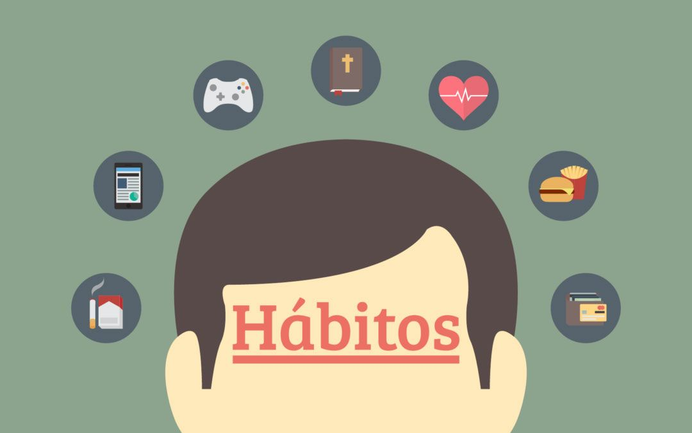
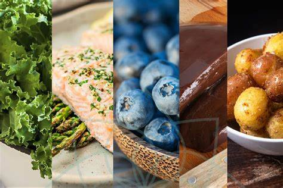

La hora actual es:
Hoy es .
La hora actual es:
Hoy es .

Cuida tu organismo

1. Desayunar:se dice que el desayuno es el alimento más importante del día ya que de esto
depende que se
cuente con la energía necesaria para comenzar nuestras actividades diarias, lo ideal es desayunar no más
de 45 minutos después a haberse levantado y por su puesto antes de iniciar labores en el trabajo, la
escuela, entre otros.
2. Comer despacio y masticar bien los alimentos: algunas personas están acostumbradas a
ingerir sus
alimentos de manera muy rápida y sin disfrutarlos, tal vez porque tienen prisa cuando están comiendo o
simplemente porque así lo hacen, es importante hacerlo con calma ya que además de que saboreamos más cada
alimento que comemos, tendremos una mejor digestión y nos ayuda a saciarnos más rápido con menor cantidad
de comida.
3. Consume al menos 4 raciones de frutas y verduras al día: estos alimentos aportan
micronutrientes muy
importantes para nuestro cuerpo, como fibra, vitaminas y minerales, los cuales son necesarios para llevar
a cabo todas las funciones de nuestro cuerpo para conservar nuestra salud. Incorpóralas enteras y de
preferencia crudas o escalfadas a tus colaciones, guisos, guarniciones, etc.
4. Beber agua natural: un alto porcentaje de nuestro cuerpo está compuesto por agua;
esta es vital para
mantener y llevar a cabo funciones vitales como respirar, eliminar desechos, realizar la digestión de los
alimentos, entre otros. La cantidad de consumo podría variar dependiendo a cada cuerpo y a la actividad
que se realice, pero aproximadamente se recomienda tomar de uno y medio a dos litros por día.
5. Evitar el consumo de alimentos fritos: tal vez estos alimentos te parezcan muy
apetecibles, sin embargo
son muy dañinos, ya que las grasas que contienen están oxidadas, lo que puede contribuir a un incremento
de altos niveles del colesterol malo (LDL) y radicales libres en nuestro cuerpo.

Verduras y hortalizas. Al menos dos raciones de verduras y hortalizas al día, procurando
que una sea en
crudo.
Fruta variada
Fruta. Tres piezas de fruta al día, preferentemente con piel.
Cereales
Cereales. Diariamente, ya sea en forma de pan, pasta, arroz, etc., y es preferible que sean integrales.
Aceite de oliva
Aceite de oliva. Diariamente tanto para cocinar como para aliñar y es preferible que sea virgen extra.
Consumir frutos secos con frecuencia
Legumbres y frutos secos. Cada uno de ellos al menos tres veces por semana.
Pescado y marisco
Pescados y mariscos. Al menos tres raciones por semana, una de ellas en forma de pescado azul.
Huevos
Huevos. Tres o cuatro huevos a la semana.
Lácteos
Lácteos. Dos o tres veces al día en forma de vaso de leche, yogures, quallada, quefir, formatges ...
Reducir el consumo de carne
Carnes rojas (ternera, cerdo, cordero, potro, buey...). Su consumo se limita a una vez a la semana.
Pata de pollo
Carnes blancas (pollo, pavo y conejo). Tres o cuatro veces a la semana.
Embutido y pastelería tachados
Evitar las carnes procesadas, los embutidos, los snacks, bollería y pastelería, las bebidas azucaradas
como refrescos y zumos comerciales, los platos precocinados, las grasas como mantequilla, nata, margarina,
etc.
1. Preparar los alimentos saludables de modo que estén listos para agarrar y comer. Es
decir, dejar la
fruta ya partida y las verduras cocinadas desde un día antes para que resulten aperitivos atractivos
cuando se sienta un antojo.
2. Ponerlos a la vista. Se deben colocar en el centro del mostrador de la cocina y a la
altura de los ojos
dentro del refrigerador, no escondidos en una estantería o en una esquina oscura de la nevera.
3. Hacerlos más atractivos. Al igual que sucede en las tiendas con los dulces, los
alimentos saludables
deben tener una presentación que invite a comerlos. Se puede optar por comprar un bol de fruta visualmente
atractivo, por ejemplo.
4. Hacer que la comida saludable se convierta en algo habitual. Esto puede implicar tomar
medidas como el
hecho de acostumbrarse a servir una verdura en cada comida, o cortar fruta en trozos para el desayuno
todos los días.
5. Incluirlos en la lista del súper. Al momento de ir por las compras al supermercado, se
debe acostumbrar
llenar la mitad del carrito con fruta y verdura, tal y como se recomienda que se haga con el plato de cada
comida.